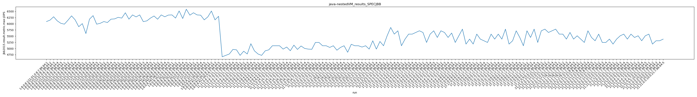
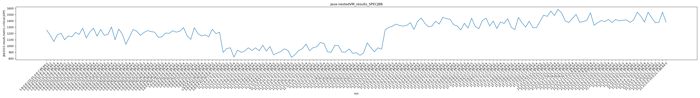
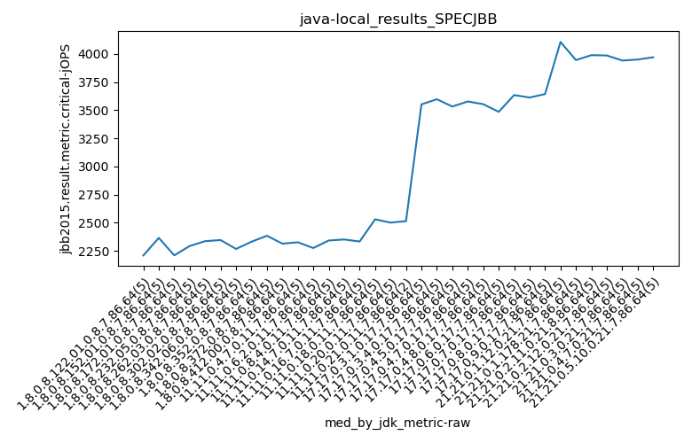
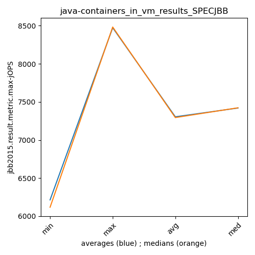
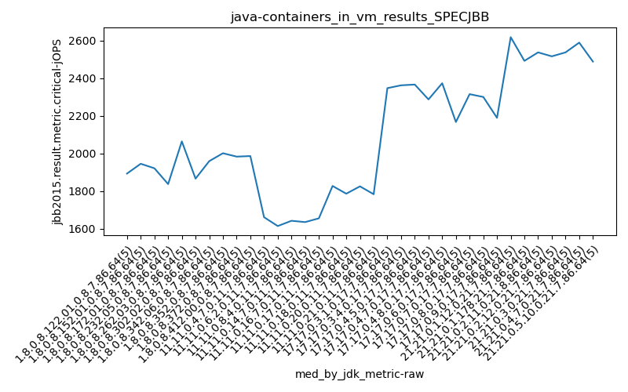
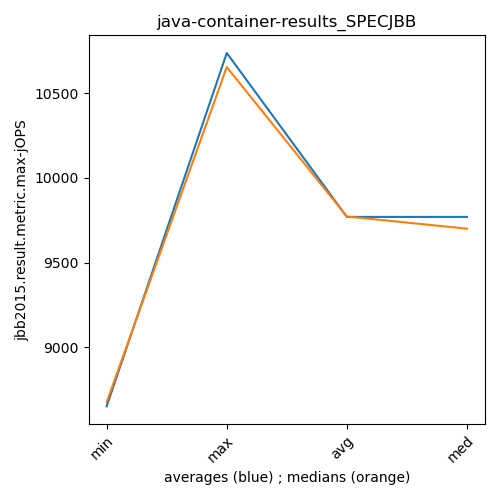
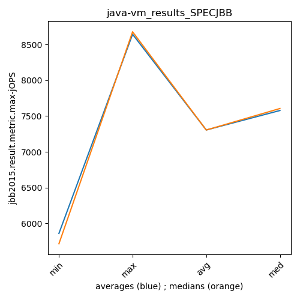

java- SPECJBB
Context at bottom
/home/jvanek/git/benchmarks-in-nested-virtualisation-toolchain/final_results/nestedVM_results/nestedVM_results_J2DBENCH
java-
SPECJBB
/home/jvanek/git/benchmarks-in-nested-virtualisation-toolchain/final_results/nestedVM_results/nestedVM_results_RADARGUNs3
java-
SPECJBB
/home/jvanek/git/benchmarks-in-nested-virtualisation-toolchain/final_results/nestedVM_results/nestedVM_results_DACAPO
java-
SPECJBB
/home/jvanek/git/benchmarks-in-nested-virtualisation-toolchain/final_results/nestedVM_results/nestedVM_results_JMH
java-
SPECJBB
/home/jvanek/git/benchmarks-in-nested-virtualisation-toolchain/final_results/nestedVM_results/nestedVM_results_SPECJBB
java-
SPECJBB
nestedVM_results_SPECJBB
- nestedVM_results_SPECJBB - max-jops
- nestedVM_results_SPECJBB - critical jops
nestedVM_results_SPECJBB - max-jops
Expected number of java- JDKs: 35
1st avgmed_alljdks_metric:
/home/jvanek/git/benchmarks-in-nested-virtualisation-toolchain/final_results/result_processing.py /home/jvanek/git/benchmarks-in-nested-virtualisation-toolchain/final_results/nestedVM_results/nestedVM_results_SPECJBB jbb2015.result.metric.max-jOPS False
values: [6090, 6149, 6284, 6120, 6020, 5985, 6145, 6321, 6159, 5882, 6007, 5605, 6187, 6330, 5985, 6020, 6090, 6052, 6187, 6198, 6261, 6231, 6446, 6187, 6359, 6279, 6359, 6088, 6118, 6231, 6315, 6185, 6359, 6284, 6353, 6359, 6231, 6520, 6214, 6589, 6349, 6446, 6359, 6349, 6159, 6279, 6517, 6159, 6303, 4665, 4722, 4778, 4963, 4946, 4722, 4890, 4778, 5194, 4905, 4778, 4722, 4905, 4946, 5111, 5111, 5111, 4976, 5059, 4909, 5136, 4963, 5102, 5003, 4976, 4968, 5245, 5245, 5111, 5111, 5044, 5111, 4931, 5044, 5111, 4848, 5171, 5111, 5111, 5059, 5111, 4976, 5313, 4976, 5284, 5111, 5514, 5851, 5582, 5716, 5111, 5380, 5582, 5582, 5649, 5716, 5649, 5245, 5582, 5716, 5447, 5716, 5649, 5447, 5626, 5245, 5514, 5783, 5178, 5380, 5180, 5582, 5380, 5313, 5245, 5582, 5380, 5582, 5380, 5783, 5178, 5313, 5716, 5447, 5111, 5716, 5447, 5783, 5245, 5716, 5783, 5649, 5716, 5783, 5582, 5582, 5380, 5649, 5380, 5514, 5380, 5245, 5716, 5447, 5313, 5582, 5245, 5245, 5380, 5178, 5380, 5514, 5582, 5380, 5582, 5447, 5514, 5313, 5514, 5582, 5178, 5313, 5313, 5380]

Expected number of iterations: 5
final number of values: 173 out of 175
Pass rate: 98.9%
values: (4665, 6589, 5565.0115606936415, 5514)

** accuracy from all jdks and runs
more is better
MIN: 4665
MAX: 6589
AVG: 5565.0115606936415
MED: 5514
Relative differences 1:
MIN-MAX: 29.0 %
MIN-AVG: 16.0 %
MIN-MED: 15.0 %
MAX-MIN: -41.0 %
MAX-AVG: -18.0 %
MAX-MED: -19.0 %
AVG-MED: -1.0 %
stored to java-.properties. sort | uniq that!
2nd avgmed_by_jdk_metric:
values: [6132.6, 6098.4, 6022.8, 6109.4, 6296.8, 6215.0, 6299.2, 6382.6, 6332.4, 6314.5, 4814.8, 4897.8, 4892.4, 5033.2, 5036.0, 5136.0, 5048.2, 5060.0, 5132.0, 5554.8, 5460.8, 5581.6, 5577.0, 5420.0, 5363.75, 5433.8, 5487.4, 5460.4, 5729.4, 5514.6, 5460.4, 5353.0, 5406.8, 5474.0, 5353.2]

values: [6120, 6145, 6007, 6090, 6261, 6231, 6315, 6359, 6349, 6303, 4778, 4890, 4905, 5059, 5003, 5111, 5044, 5111, 5111, 5582, 5582, 5649, 5626, 5380, 5380, 5380, 5447, 5447, 5716, 5582, 5447, 5313, 5380, 5514, 5313]

values: (4814.8, 6382.6, 5568.144285714286, 5460.8)
values: (4778, 6359, 5569.428571428572, 5447)

** accuracy from all jdks where runs were avged
more is better
MIN: 4814.8
MAX: 6382.6
AVG: 5568.144285714286
MED: 5460.8
Relative differences 1:
MIN-MAX: 25.0 %
MIN-AVG: 14.0 %
MIN-MED: 12.0 %
MAX-MIN: -33.0 %
MAX-AVG: -15.0 %
MAX-MED: -17.0 %
AVG-MED: -2.0 %
stored to java-.properties. sort | uniq that!
** accuracy from all jdks where runs were medianed
more is better
MIN: 4778
MAX: 6359
AVG: 5569.428571428572
MED: 5447
Relative differences 1:
MIN-MAX: 25.0 %
MIN-AVG: 14.0 %
MIN-MED: 12.0 %
MAX-MIN: -33.0 %
MAX-AVG: -14.0 %
MAX-MED: -17.0 %
AVG-MED: -2.0 %
stored to java-.properties. sort | uniq that!
nestedVM_results_SPECJBB - critical jops
Expected number of java- JDKs: 35
1st avgmed_alljdks_metric:
/home/jvanek/git/benchmarks-in-nested-virtualisation-toolchain/final_results/result_processing.py /home/jvanek/git/benchmarks-in-nested-virtualisation-toolchain/final_results/nestedVM_results/nestedVM_results_SPECJBB jbb2015.result.metric.critical-jOPS False
values: [1252, 1171, 1071, 1181, 1200, 1100, 1161, 1146, 1216, 1183, 1283, 1129, 1223, 1281, 1157, 1264, 1170, 1183, 1303, 1099, 1270, 1189, 1026, 1146, 1262, 1236, 1170, 1214, 1244, 1230, 1219, 1138, 1145, 1206, 1201, 1242, 1220, 1235, 1292, 1164, 1104, 1290, 1197, 1160, 1176, 1147, 1267, 1196, 1219, 898, 960, 971, 824, 934, 899, 919, 971, 928, 971, 923, 1012, 919, 992, 859, 885, 913, 954, 929, 819, 865, 929, 957, 1030, 926, 974, 987, 1056, 1039, 906, 900, 1010, 1009, 903, 903, 953, 883, 893, 852, 889, 1050, 976, 907, 971, 950, 1257, 1294, 1314, 1348, 1327, 1316, 1327, 1371, 1263, 1391, 1445, 1363, 1306, 1317, 1394, 1349, 1456, 1435, 1425, 1339, 1318, 1256, 1361, 1285, 1441, 1311, 1275, 1404, 1443, 1318, 1396, 1277, 1382, 1357, 1434, 1298, 1261, 1455, 1369, 1301, 1394, 1291, 1293, 1390, 1491, 1471, 1555, 1485, 1583, 1525, 1399, 1373, 1438, 1503, 1378, 1387, 1410, 1528, 1329, 1370, 1405, 1387, 1423, 1372, 1421, 1399, 1409, 1416, 1376, 1413, 1539, 1472, 1379, 1537, 1450, 1370, 1376, 1538, 1379]

Expected number of iterations: 5
final number of values: 173 out of 175
Pass rate: 98.9%
values: (819, 1583, 1216.236994219653, 1257)

** accuracy from all jdks and runs
more is better
MIN: 819
MAX: 1583
AVG: 1216.236994219653
MED: 1257
Relative differences 1:
MIN-MAX: 48.0 %
MIN-AVG: 33.0 %
MIN-MED: 35.0 %
MAX-MIN: -93.0 %
MAX-AVG: -30.0 %
MAX-MED: -26.0 %
AVG-MED: 3.0 %
stored to java-.properties. sort | uniq that!
2nd avgmed_by_jdk_metric:
values: [1175.0, 1161.2, 1214.6, 1203.8, 1178.6, 1218.8, 1181.8, 1230.6, 1185.4, 1207.25, 917.4, 937.6, 941.0, 900.0, 941.4, 992.4, 945.0, 894.0, 970.8, 1308.0, 1333.6, 1365.0, 1400.8, 1332.2, 1358.25, 1346.0, 1363.4, 1333.8, 1517.0, 1447.6, 1406.4, 1391.4, 1404.2, 1468.0, 1422.6]

values: [1181, 1161, 1223, 1183, 1189, 1230, 1201, 1235, 1176, 1219, 934, 928, 923, 913, 929, 987, 903, 889, 971, 1314, 1327, 1363, 1425, 1318, 1404, 1357, 1369, 1301, 1491, 1438, 1387, 1387, 1409, 1472, 1379]

values: (894.0, 1517.0, 1216.997142857143, 1218.8)
values: (889, 1491, 1214.7428571428572, 1230)

** accuracy from all jdks where runs were avged
more is better
MIN: 894.0
MAX: 1517.0
AVG: 1216.997142857143
MED: 1218.8
Relative differences 1:
MIN-MAX: 41.0 %
MIN-AVG: 27.0 %
MIN-MED: 27.0 %
MAX-MIN: -70.0 %
MAX-AVG: -25.0 %
MAX-MED: -24.0 %
AVG-MED: 0.0 %
stored to java-.properties. sort | uniq that!
** accuracy from all jdks where runs were medianed
more is better
MIN: 889
MAX: 1491
AVG: 1214.7428571428572
MED: 1230
Relative differences 1:
MIN-MAX: 40.0 %
MIN-AVG: 27.0 %
MIN-MED: 28.0 %
MAX-MIN: -68.0 %
MAX-AVG: -23.0 %
MAX-MED: -21.0 %
AVG-MED: 1.0 %
stored to java-.properties. sort | uniq that!
/home/jvanek/git/benchmarks-in-nested-virtualisation-toolchain/final_results/nestedVM_results/nestedVM_results_RADARGUNs1
java-
SPECJBB
/home/jvanek/git/benchmarks-in-nested-virtualisation-toolchain/final_results/containers_in_container_results/containers_in_container_DACAPO
java-
SPECJBB
/home/jvanek/git/benchmarks-in-nested-virtualisation-toolchain/final_results/containers_in_container_results/containers_in_container_JMH
java-
SPECJBB
/home/jvanek/git/benchmarks-in-nested-virtualisation-toolchain/final_results/containers_in_container_results/containers_in_container_SPECJBB
java-
SPECJBB
containers_in_container_SPECJBB
- containers_in_container_SPECJBB - max-jops
- containers_in_container_SPECJBB - critical jops
containers_in_container_SPECJBB - max-jops
Expected number of java- JDKs: 37
1st avgmed_alljdks_metric:
/home/jvanek/git/benchmarks-in-nested-virtualisation-toolchain/final_results/result_processing.py /home/jvanek/git/benchmarks-in-nested-virtualisation-toolchain/final_results/containers_in_container_results/containers_in_container_SPECJBB jbb2015.result.metric.max-jOPS False
values: [11070, 10793, 10931, 11208, 11070, 10793, 11070, 10931, 10654, 11208, 10931, 11070, 11070, 11208, 10793, 10931, 10931, 10793, 11070, 10931, 10931, 11070, 9271, 11070, 11070, 10931, 11208, 11070, 11208, 10931, 10793, 10793, 10793, 11070, 10654, 10931, 10654, 10793, 10624, 10654, 10793, 10931, 10931, 10793, 10793, 10793, 10654, 10793, 10654, 10793, 8612, 9305, 8711, 8869, 9037, 9107, 9096, 8910, 9305, 9037, 8711, 9008, 8909, 9206, 8892, 9057, 9173, 8891, 9062, 9107, 9206, 9219, 8869, 8909, 9206, 9008, 9037, 9057, 8909, 9119, 9206, 9037, 8612, 8810, 8711, 8759, 8716, 9107, 8610, 9311, 9206, 9007, 9242, 8892, 8998, 9606, 9585, 10047, 9931, 10047, 9931, 9700, 9816, 9816, 9931, 9585, 9816, 9641, 9653, 9816, 9686, 9931, 10162, 9748, 9931, 9816, 9931, 9855, 9700, 9816, 9641, 9641, 9653, 9700, 9534, 9858, 9534, 9550, 9550, 9855, 9700, 9354, 9756, 9700, 9931, 9700, 9641, 9585, 9700, 9585, 9700, 9816, 9700, 10047, 9700, 9931, 9816, 9585, 9963, 9816, 9931, 9931, 9700, 9816, 9816, 9585, 9931, 9931, 9585, 9816, 9585, 9816, 9816, 9816, 9700, 9816, 9469, 9354, 9816, 9816, 10047, 9816, 9816, 9931, 9931]

Expected number of iterations: 5
final number of values: 175 out of 185
Pass rate: 94.6%
values: (8610, 11208, 9885.697142857143, 9816)

** accuracy from all jdks and runs
more is better
MIN: 8610
MAX: 11208
AVG: 9885.697142857143
MED: 9816
Relative differences 1:
MIN-MAX: 23.0 %
MIN-AVG: 13.0 %
MIN-MED: 12.0 %
MAX-MIN: -30.0 %
MAX-AVG: -13.0 %
MAX-MED: -14.0 %
AVG-MED: -1.0 %
stored to java-.properties. sort | uniq that!
2nd avgmed_by_jdk_metric:
values: [11014.4, 10931.2, 11014.4, 10931.2, 10682.4, 11069.6, 10820.6, 10731.2, 10848.2, 10737.4, 8906.8, 9091.0, 8945.2, 9058.0, 9081.8, 9026.0, 8875.2, 8900.6, 9069.0, 9843.2, 9838.8, 9702.2, 9891.6, 9823.6, 9633.8, 9669.4, 9688.2, 9642.2, 9792.6, 9822.2, 9838.8, 9769.6, 9746.6, 9654.2, 9908.2]

values: [11070, 10931, 11070, 10931, 11070, 11070, 10793, 10654, 10793, 10793, 8869, 9096, 8909, 9062, 9206, 9037, 8810, 8759, 9007, 9931, 9816, 9653, 9931, 9816, 9641, 9550, 9700, 9641, 9700, 9816, 9816, 9816, 9816, 9816, 9931]

values: (8875.2, 11069.6, 9885.697142857143, 9792.6)
values: (8759, 11070, 9894.857142857143, 9816)

** accuracy from all jdks where runs were avged
more is better
MIN: 8875.2
MAX: 11069.6
AVG: 9885.697142857143
MED: 9792.6
Relative differences 1:
MIN-MAX: 20.0 %
MIN-AVG: 10.0 %
MIN-MED: 9.0 %
MAX-MIN: -25.0 %
MAX-AVG: -12.0 %
MAX-MED: -13.0 %
AVG-MED: -1.0 %
stored to java-.properties. sort | uniq that!
** accuracy from all jdks where runs were medianed
more is better
MIN: 8759
MAX: 11070
AVG: 9894.857142857143
MED: 9816
Relative differences 1:
MIN-MAX: 21.0 %
MIN-AVG: 11.0 %
MIN-MED: 11.0 %
MAX-MIN: -26.0 %
MAX-AVG: -12.0 %
MAX-MED: -13.0 %
AVG-MED: -1.0 %
stored to java-.properties. sort | uniq that!
containers_in_container_SPECJBB - critical jops
Expected number of java- JDKs: 37
1st avgmed_alljdks_metric:
/home/jvanek/git/benchmarks-in-nested-virtualisation-toolchain/final_results/result_processing.py /home/jvanek/git/benchmarks-in-nested-virtualisation-toolchain/final_results/containers_in_container_results/containers_in_container_SPECJBB jbb2015.result.metric.critical-jOPS False
values: [2300, 2049, 2352, 2417, 2315, 2433, 2014, 2089, 2428, 2381, 2143, 2483, 2405, 2489, 2668, 2174, 2214, 2362, 2366, 2233, 2182, 2420, 2315, 2392, 2063, 2348, 2485, 2355, 2200, 2113, 2487, 2221, 2392, 2314, 2418, 2139, 2321, 2256, 2227, 2540, 2302, 2297, 2379, 2335, 2178, 2388, 2328, 2537, 2490, 2259, 2289, 2382, 2213, 2193, 2292, 2010, 2339, 2097, 2399, 2159, 2053, 1847, 2233, 2459, 2238, 2273, 2413, 2240, 2381, 2086, 2361, 2348, 2349, 2352, 2278, 2600, 2424, 2515, 2415, 2458, 2433, 2253, 2582, 2506, 2399, 2357, 2543, 2819, 2622, 2603, 2619, 2450, 2272, 2582, 2471, 3366, 3417, 3419, 3443, 3655, 3502, 3443, 3510, 3373, 3536, 3397, 3632, 3374, 3497, 3379, 3499, 3634, 3544, 3497, 3482, 3523, 3581, 3595, 3528, 3659, 3372, 3455, 3372, 3521, 3289, 3306, 3426, 3316, 3364, 3379, 3411, 3588, 3549, 3324, 3448, 3549, 3482, 3584, 3442, 3401, 4039, 3971, 3918, 3997, 3849, 3765, 3908, 3819, 3896, 3815, 3942, 3965, 3909, 3896, 3796, 3859, 4006, 3882, 3818, 3934, 3849, 3932, 3801, 3827, 3809, 3972, 3824, 3780, 3860, 3818, 3983, 3763, 3814, 3848, 3813]

Expected number of iterations: 5
final number of values: 175 out of 185
Pass rate: 94.6%
values: (1847, 4039, 2936.8171428571427, 2582)

** accuracy from all jdks and runs
more is better
MIN: 1847
MAX: 4039
AVG: 2936.8171428571427
MED: 2582
Relative differences 1:
MIN-MAX: 54.0 %
MIN-AVG: 37.0 %
MIN-MED: 28.0 %
MAX-MIN: -119.0 %
MAX-AVG: -38.0 %
MAX-MED: -56.0 %
AVG-MED: -14.0 %
stored to java-.properties. sort | uniq that!
2nd avgmed_by_jdk_metric:
values: [2286.6, 2269.0, 2437.6, 2269.8, 2274.4, 2300.2, 2366.4, 2296.6, 2298.2, 2400.4, 2273.8, 2200.8, 2166.0, 2278.6, 2337.6, 2482.4, 2434.6, 2588.8, 2478.8, 3460.0, 3472.8, 3455.8, 3531.2, 3577.2, 3401.8, 3358.2, 3464.0, 3491.6, 3954.8, 3840.6, 3901.6, 3899.8, 3843.6, 3850.8, 3844.2]

values: [2315, 2381, 2483, 2233, 2315, 2348, 2392, 2256, 2302, 2388, 2289, 2159, 2233, 2273, 2349, 2458, 2433, 2603, 2471, 3419, 3502, 3397, 3499, 3581, 3372, 3364, 3448, 3482, 3971, 3819, 3909, 3882, 3827, 3824, 3814]

values: (2166.0, 3954.8, 2936.817142857143, 2482.4)
values: (2159, 3971, 2936.885714285714, 2483)

** accuracy from all jdks where runs were avged
more is better
MIN: 2166.0
MAX: 3954.8
AVG: 2936.817142857143
MED: 2482.4
Relative differences 1:
MIN-MAX: 45.0 %
MIN-AVG: 26.0 %
MIN-MED: 13.0 %
MAX-MIN: -83.0 %
MAX-AVG: -35.0 %
MAX-MED: -59.0 %
AVG-MED: -18.0 %
stored to java-.properties. sort | uniq that!
** accuracy from all jdks where runs were medianed
more is better
MIN: 2159
MAX: 3971
AVG: 2936.885714285714
MED: 2483
Relative differences 1:
MIN-MAX: 46.0 %
MIN-AVG: 26.0 %
MIN-MED: 13.0 %
MAX-MIN: -84.0 %
MAX-AVG: -35.0 %
MAX-MED: -60.0 %
AVG-MED: -18.0 %
stored to java-.properties. sort | uniq that!
/home/jvanek/git/benchmarks-in-nested-virtualisation-toolchain/final_results/containers_in_container_results/containers_in_container_RADARGUNs1
java-
SPECJBB
/home/jvanek/git/benchmarks-in-nested-virtualisation-toolchain/final_results/containers_in_container_results/containers_in_container_J2DBENCH
java-
SPECJBB
/home/jvanek/git/benchmarks-in-nested-virtualisation-toolchain/final_results/containers_in_container_results/containers_in_container_RADARGUNs3
java-
SPECJBB
/home/jvanek/git/benchmarks-in-nested-virtualisation-toolchain/final_results/local_results/local_results_J2DBENCH
java-
SPECJBB
/home/jvanek/git/benchmarks-in-nested-virtualisation-toolchain/final_results/local_results/local_results_SPECJBB
java-
SPECJBB
local_results_SPECJBB
- local_results_SPECJBB - max-jops
- local_results_SPECJBB - critical jops
local_results_SPECJBB - max-jops
Expected number of java- JDKs: 37
1st avgmed_alljdks_metric:
/home/jvanek/git/benchmarks-in-nested-virtualisation-toolchain/final_results/result_processing.py /home/jvanek/git/benchmarks-in-nested-virtualisation-toolchain/final_results/local_results/local_results_SPECJBB jbb2015.result.metric.max-jOPS False
values: [10931, 11208, 10793, 11070, 11208, 11208, 11208, 11070, 11208, 10793, 11070, 10931, 10931, 11070, 10931, 10931, 10931, 11070, 10931, 10793, 11070, 10931, 10931, 10931, 10931, 11070, 11070, 10793, 11070, 10793, 10793, 10931, 10516, 10931, 10931, 11208, 11070, 11070, 11070, 11208, 11070, 11070, 11070, 11070, 11070, 10931, 11070, 10931, 11208, 11070, 9123, 8711, 9123, 9123, 9206, 8729, 9123, 9008, 9008, 8810, 9107, 9245, 9254, 8661, 9206, 8612, 9139, 9037, 9139, 9153, 9242, 9201, 9503, 8934, 9206, 9139, 9107, 8831, 9107, 9139, 9107, 8934, 9107, 9242, 9107, 8934, 9096, 9931, 9931, 9816, 9816, 9931, 10047, 9816, 9931, 9931, 10047, 9816, 9816, 9931, 9816, 9855, 9931, 9931, 9931, 9816, 10162, 10047, 10047, 9931, 9700, 10047, 9931, 9585, 9748, 9700, 10047, 9931, 9931, 9700, 9816, 10162, 9931, 10162, 10162, 9748, 9931, 10047, 10162, 9931, 9585, 9700, 9931, 9931, 10162, 10278, 10278, 10047, 10162, 9816, 9931, 10278, 10047, 10162, 10162, 10162, 10047, 10162, 10162, 10162, 9931, 9816, 9585, 9816, 9816, 9700, 9700, 9816, 9816, 9700, 10162, 10047, 9700, 10047, 10162, 9469, 9816]

Expected number of iterations: 5
final number of values: 167 out of 185
Pass rate: 90.3%
values: (8612, 11208, 10062.754491017964, 9931)

** accuracy from all jdks and runs
more is better
MIN: 8612
MAX: 11208
AVG: 10062.754491017964
MED: 9931
Relative differences 1:
MIN-MAX: 23.0 %
MIN-AVG: 14.0 %
MIN-MED: 13.0 %
MAX-MIN: -30.0 %
MAX-AVG: -11.0 %
MAX-MED: -13.0 %
AVG-MED: -1.0 %
stored to java-.properties. sort | uniq that!
2nd avgmed_by_jdk_metric:
values: [11042.0, 11097.4, 10986.6, 10931.2, 10958.8, 10959.2, 10820.4, 11125.2, 11070.0, 11042.0, 9057.2, 8935.6, 9094.6, 9016.0, 9217.2, 9064.6, 9099.4, 9015.0, 9885.0, 9954.4, 9846.8, 9954.2, 9954.4, 9802.2, 9908.0, 9986.8, 9885.0, 10116.0, 10046.8, 10116.0, 10046.6, 9723.4, 9908.2, 9838.8]

values: [11070, 11208, 10931, 10931, 10931, 11070, 10931, 11070, 11070, 11070, 9123, 9008, 9206, 9139, 9206, 9107, 9107, 9096, 9931, 9931, 9816, 9931, 10047, 9748, 9931, 9931, 9931, 10162, 10047, 10162, 10162, 9700, 9816, 9816]

values: (8935.6, 11125.2, 10044.264705882353, 9954.4)
values: (9008, 11208, 10068.70588235294, 9931)

** accuracy from all jdks where runs were avged
more is better
MIN: 8935.6
MAX: 11125.2
AVG: 10044.264705882353
MED: 9954.4
Relative differences 1:
MIN-MAX: 20.0 %
MIN-AVG: 11.0 %
MIN-MED: 10.0 %
MAX-MIN: -25.0 %
MAX-AVG: -11.0 %
MAX-MED: -12.0 %
AVG-MED: -1.0 %
stored to java-.properties. sort | uniq that!
** accuracy from all jdks where runs were medianed
more is better
MIN: 9008
MAX: 11208
AVG: 10068.70588235294
MED: 9931
Relative differences 1:
MIN-MAX: 20.0 %
MIN-AVG: 11.0 %
MIN-MED: 9.0 %
MAX-MIN: -24.0 %
MAX-AVG: -11.0 %
MAX-MED: -13.0 %
AVG-MED: -1.0 %
stored to java-.properties. sort | uniq that!
local_results_SPECJBB - critical jops
Expected number of java- JDKs: 37
1st avgmed_alljdks_metric:
/home/jvanek/git/benchmarks-in-nested-virtualisation-toolchain/final_results/result_processing.py /home/jvanek/git/benchmarks-in-nested-virtualisation-toolchain/final_results/local_results/local_results_SPECJBB jbb2015.result.metric.critical-jOPS False
values: [2117, 2199, 2209, 2302, 2415, 2510, 2605, 2299, 2309, 2365, 2210, 2350, 2189, 2356, 1989, 2159, 2193, 2442, 2293, 2521, 2336, 2476, 2186, 2570, 2041, 2427, 2313, 2346, 2391, 2221, 2476, 2202, 2226, 2267, 2401, 2364, 2331, 2570, 2293, 2319, 2384, 2413, 2115, 2408, 2118, 2314, 2353, 2500, 2282, 2232, 2497, 2342, 2136, 1988, 2326, 2237, 1957, 2275, 2297, 2285, 2426, 2342, 2438, 2315, 2064, 2647, 2351, 2251, 2641, 2243, 2333, 2625, 2213, 2206, 2540, 2530, 2578, 2518, 2755, 2215, 2640, 2599, 2486, 2501, 2180, 2514, 2514, 3552, 3544, 3626, 3577, 3462, 3621, 3629, 3583, 3598, 3568, 3532, 3523, 3552, 3621, 3533, 3598, 3570, 3555, 3618, 3578, 3399, 3554, 3596, 3547, 3719, 3486, 3459, 3649, 3433, 3637, 3683, 3658, 3606, 3619, 3635, 3667, 3441, 3613, 3582, 3641, 3705, 3632, 3644, 3589, 3679, 4098, 4086, 4107, 4132, 4251, 4047, 3946, 3924, 3909, 3989, 3990, 4099, 4003, 3840, 3959, 3987, 4098, 4040, 3931, 3933, 3979, 3942, 3878, 3953, 3904, 3980, 3918, 3904, 3967, 3951, 3948, 3971, 4030, 3979, 3890]

Expected number of iterations: 5
final number of values: 167 out of 185
Pass rate: 90.3%
values: (1957, 4251, 3022.682634730539, 2640)

** accuracy from all jdks and runs
more is better
MIN: 1957
MAX: 4251
AVG: 3022.682634730539
MED: 2640
Relative differences 1:
MIN-MAX: 54.0 %
MIN-AVG: 35.0 %
MIN-MED: 26.0 %
MAX-MIN: -117.0 %
MAX-AVG: -41.0 %
MAX-MED: -61.0 %
AVG-MED: -14.0 %
stored to java-.properties. sort | uniq that!
2nd avgmed_by_jdk_metric:
values: [2248.4, 2417.6, 2218.8, 2321.6, 2321.8, 2339.6, 2314.4, 2375.4, 2287.6, 2336.2, 2257.8, 2210.2, 2317.0, 2426.6, 2383.4, 2519.2, 2481.2, 2514.0, 3552.2, 3599.8, 3552.2, 3583.8, 3563.0, 3532.8, 3640.2, 3588.8, 3649.8, 4134.8, 3963.0, 3978.2, 3997.8, 3931.2, 3944.0, 3963.6]

values: [2209, 2365, 2210, 2293, 2336, 2346, 2267, 2331, 2384, 2314, 2326, 2275, 2342, 2351, 2333, 2530, 2501, 2514, 3552, 3598, 3533, 3578, 3554, 3486, 3635, 3613, 3644, 4107, 3946, 3990, 3987, 3942, 3951, 3971]

values: (2210.2, 4134.8, 3013.705882352941, 2519.2)
values: (2209, 4107, 3009.235294117647, 2530)

** accuracy from all jdks where runs were avged
more is better
MIN: 2210.2
MAX: 4134.8
AVG: 3013.705882352941
MED: 2519.2
Relative differences 1:
MIN-MAX: 47.0 %
MIN-AVG: 27.0 %
MIN-MED: 12.0 %
MAX-MIN: -87.0 %
MAX-AVG: -37.0 %
MAX-MED: -64.0 %
AVG-MED: -20.0 %
stored to java-.properties. sort | uniq that!
** accuracy from all jdks where runs were medianed
more is better
MIN: 2209
MAX: 4107
AVG: 3009.235294117647
MED: 2530
Relative differences 1:
MIN-MAX: 46.0 %
MIN-AVG: 27.0 %
MIN-MED: 13.0 %
MAX-MIN: -86.0 %
MAX-AVG: -36.0 %
MAX-MED: -62.0 %
AVG-MED: -19.0 %
stored to java-.properties. sort | uniq that!
/home/jvanek/git/benchmarks-in-nested-virtualisation-toolchain/final_results/local_results/local_results_RADARGUNs1
java-
SPECJBB
/home/jvanek/git/benchmarks-in-nested-virtualisation-toolchain/final_results/local_results/local_results_RADARGUNs3
java-
SPECJBB
/home/jvanek/git/benchmarks-in-nested-virtualisation-toolchain/final_results/local_results/local_results_JMH
java-
SPECJBB
/home/jvanek/git/benchmarks-in-nested-virtualisation-toolchain/final_results/local_results/local_results_DACAPO
java-
SPECJBB
/home/jvanek/git/benchmarks-in-nested-virtualisation-toolchain/final_results/containers_in_vm_results/containers_in_vm_results_JMH
java-
SPECJBB
/home/jvanek/git/benchmarks-in-nested-virtualisation-toolchain/final_results/containers_in_vm_results/containers_in_vm_results_J2DBENCH
java-
SPECJBB
/home/jvanek/git/benchmarks-in-nested-virtualisation-toolchain/final_results/containers_in_vm_results/containers_in_vm_results_RADARGUNs3
java-
SPECJBB
/home/jvanek/git/benchmarks-in-nested-virtualisation-toolchain/final_results/containers_in_vm_results/containers_in_vm_results_SPECJBB
java-
SPECJBB
containers_in_vm_results_SPECJBB
- containers_in_vm_results_SPECJBB - max-jops
- containers_in_vm_results_SPECJBB - critical jops
containers_in_vm_results_SPECJBB - max-jops
Expected number of java- JDKs: 37
1st avgmed_alljdks_metric:
/home/jvanek/git/benchmarks-in-nested-virtualisation-toolchain/final_results/result_processing.py /home/jvanek/git/benchmarks-in-nested-virtualisation-toolchain/final_results/containers_in_vm_results/containers_in_vm_results_SPECJBB jbb2015.result.metric.max-jOPS False
values: [7808, 7905, 7905, 8001, 7905, 7712, 7820, 7712, 7712, 7712, 7622, 7712, 7808, 8018, 8001, 7905, 7712, 7519, 7519, 7712, 7712, 7808, 7712, 7845, 8117, 7808, 7905, 7712, 7712, 7820, 7712, 7808, 7712, 7905, 7808, 8290, 8387, 8580, 8483, 8098, 8194, 8290, 8290, 8387, 8483, 8531, 8483, 8387, 8483, 8483, 6359, 6520, 6440, 6359, 6279, 6279, 6279, 6198, 6359, 6279, 6440, 6440, 6440, 6359, 6198, 6037, 6279, 6359, 6359, 6520, 6359, 6359, 6118, 6118, 6118, 7003, 7084, 7003, 6923, 7164, 7084, 7084, 7003, 7245, 7084, 7003, 7084, 7245, 7084, 7084, 7134, 7003, 7084, 6842, 7164, 6652, 6613, 6637, 6762, 6681, 6555, 6695, 6778, 6762, 6695, 6688, 6844, 6748, 6601, 6555, 6520, 6652, 6555, 6555, 6530, 6520, 6695, 6695, 6748, 6778, 7519, 7326, 7486, 7326, 7325, 7164, 7406, 7423, 7439, 7325, 7712, 7519, 7486, 7109, 7274, 7164, 7519, 7325, 7230, 7423, 7519, 7808, 7486, 7616, 7616, 7712, 7357, 7406, 7605, 7423, 7712, 7486, 7522, 7406, 7423, 7326, 7616, 7808, 7486, 7482, 7616, 7905, 7616, 7519, 7808, 7616, 7808, 7616, 7712, 7616, 7712, 7808, 7712, 7808, 7712]

Expected number of iterations: 5
final number of values: 175 out of 185
Pass rate: 94.6%
values: (6037, 8580, 7304.777142857143, 7423)

** accuracy from all jdks and runs
more is better
MIN: 6037
MAX: 8580
AVG: 7304.777142857143
MED: 7423
Relative differences 1:
MIN-MAX: 30.0 %
MIN-AVG: 17.0 %
MIN-MED: 19.0 %
MAX-MIN: -42.0 %
MAX-AVG: -17.0 %
MAX-MED: -16.0 %
AVG-MED: 2.0 %
stored to java-.properties. sort | uniq that!
2nd avgmed_by_jdk_metric:
values: [7904.8, 7733.6, 7832.2, 7673.4, 7838.8, 7791.4, 7789.0, 8367.6, 8328.8, 8473.4, 6391.4, 6278.8, 6375.4, 6310.8, 6214.4, 7035.4, 7100.0, 7100.0, 7045.4, 6669.0, 6697.0, 6687.2, 6562.4, 6687.2, 7396.4, 7351.4, 7420.0, 7332.2, 7609.0, 7500.6, 7509.8, 7543.6, 7692.8, 7673.6, 7750.4]

values: [7905, 7712, 7808, 7712, 7808, 7808, 7808, 8387, 8290, 8483, 6359, 6279, 6440, 6359, 6118, 7003, 7084, 7084, 7084, 6652, 6695, 6688, 6555, 6695, 7326, 7406, 7486, 7325, 7616, 7423, 7486, 7486, 7616, 7616, 7712]

values: (6214.4, 8473.4, 7304.777142857143, 7420.0)
values: (6118, 8483, 7294.685714285714, 7423)

** accuracy from all jdks where runs were avged
more is better
MIN: 6214.4
MAX: 8473.4
AVG: 7304.777142857143
MED: 7420.0
Relative differences 1:
MIN-MAX: 27.0 %
MIN-AVG: 15.0 %
MIN-MED: 16.0 %
MAX-MIN: -36.0 %
MAX-AVG: -16.0 %
MAX-MED: -14.0 %
AVG-MED: 2.0 %
stored to java-.properties. sort | uniq that!
** accuracy from all jdks where runs were medianed
more is better
MIN: 6118
MAX: 8483
AVG: 7294.685714285714
MED: 7423
Relative differences 1:
MIN-MAX: 28.0 %
MIN-AVG: 16.0 %
MIN-MED: 18.0 %
MAX-MIN: -39.0 %
MAX-AVG: -16.0 %
MAX-MED: -14.0 %
AVG-MED: 2.0 %
stored to java-.properties. sort | uniq that!
containers_in_vm_results_SPECJBB - critical jops
Expected number of java- JDKs: 37
1st avgmed_alljdks_metric:
/home/jvanek/git/benchmarks-in-nested-virtualisation-toolchain/final_results/result_processing.py /home/jvanek/git/benchmarks-in-nested-virtualisation-toolchain/final_results/containers_in_vm_results/containers_in_vm_results_SPECJBB jbb2015.result.metric.critical-jOPS False
values: [1965, 1816, 1893, 1992, 1873, 2129, 1945, 1956, 1786, 1858, 1830, 1921, 1953, 1888, 2316, 1837, 1686, 2017, 2222, 1818, 2064, 2125, 1906, 1848, 2076, 1864, 1824, 2087, 1866, 2069, 1959, 2350, 1756, 1679, 2042, 2038, 2141, 1949, 1917, 2001, 1813, 2001, 1983, 1866, 2041, 1996, 1986, 1929, 1848, 2115, 1661, 1738, 1610, 1700, 1591, 1614, 1657, 1510, 1606, 1654, 1595, 1639, 1642, 1660, 1835, 1634, 1646, 1635, 1654, 1597, 1655, 1732, 1609, 1671, 1649, 1687, 1847, 1748, 1827, 1827, 1953, 1786, 1765, 1742, 1835, 1811, 1825, 1938, 1813, 1851, 1732, 1783, 1819, 1721, 1795, 2186, 2347, 2322, 2411, 2370, 2190, 2341, 2362, 2398, 2423, 2346, 2389, 2366, 2347, 2408, 2287, 2197, 2077, 2413, 2319, 2382, 2389, 2373, 2306, 2316, 2153, 2167, 2334, 2080, 2377, 2360, 2366, 2236, 2260, 2315, 2311, 2180, 2300, 2337, 2272, 2306, 2180, 2301, 2189, 2106, 2611, 2656, 2593, 2618, 2624, 2450, 2516, 2569, 2492, 2472, 2550, 2425, 2537, 2498, 2558, 2473, 2593, 2588, 2483, 2516, 2520, 2537, 2578, 2595, 2457, 2615, 2615, 2547, 2589, 2561, 2488, 2475, 2486, 2576, 2526]

Expected number of iterations: 5
final number of values: 175 out of 185
Pass rate: 94.6%
values: (1510, 2656, 2100.12, 2077)

** accuracy from all jdks and runs
more is better
MIN: 1510
MAX: 2656
AVG: 2100.12
MED: 2077
Relative differences 1:
MIN-MAX: 43.0 %
MIN-AVG: 28.0 %
MIN-MED: 27.0 %
MAX-MIN: -76.0 %
MAX-AVG: -26.0 %
MAX-MED: -28.0 %
AVG-MED: -1.0 %
stored to java-.properties. sort | uniq that!
2nd avgmed_by_jdk_metric:
values: [1907.8, 1934.8, 1981.6, 1916.0, 2003.8, 1942.0, 1957.2, 2009.2, 1940.8, 1974.8, 1660.0, 1608.2, 1674.2, 1633.2, 1663.2, 1787.2, 1816.2, 1847.6, 1770.0, 2327.2, 2342.8, 2371.2, 2258.6, 2353.2, 2222.2, 2307.4, 2280.0, 2216.4, 2620.4, 2499.8, 2513.6, 2530.6, 2537.4, 2585.4, 2510.2]

values: [1893, 1945, 1921, 1837, 2064, 1866, 1959, 2001, 1983, 1986, 1661, 1614, 1642, 1635, 1655, 1827, 1786, 1825, 1783, 2347, 2362, 2366, 2287, 2373, 2167, 2315, 2300, 2189, 2618, 2492, 2537, 2516, 2537, 2589, 2488]

values: (1608.2, 2620.4, 2100.12, 2003.8)
values: (1614, 2618, 2096.1714285714284, 2001)

** accuracy from all jdks where runs were avged
more is better
MIN: 1608.2
MAX: 2620.4
AVG: 2100.12
MED: 2003.8
Relative differences 1:
MIN-MAX: 39.0 %
MIN-AVG: 23.0 %
MIN-MED: 20.0 %
MAX-MIN: -63.0 %
MAX-AVG: -25.0 %
MAX-MED: -31.0 %
AVG-MED: -5.0 %
stored to java-.properties. sort | uniq that!
** accuracy from all jdks where runs were medianed
more is better
MIN: 1614
MAX: 2618
AVG: 2096.1714285714284
MED: 2001
Relative differences 1:
MIN-MAX: 38.0 %
MIN-AVG: 23.0 %
MIN-MED: 19.0 %
MAX-MIN: -62.0 %
MAX-AVG: -25.0 %
MAX-MED: -31.0 %
AVG-MED: -5.0 %
stored to java-.properties. sort | uniq that!
/home/jvanek/git/benchmarks-in-nested-virtualisation-toolchain/final_results/containers_in_vm_results/containers_in_vm_results_RADARGUNs1
java-
SPECJBB
/home/jvanek/git/benchmarks-in-nested-virtualisation-toolchain/final_results/containers_in_vm_results/containers_in_vm_results_DACAPO
java-
SPECJBB
/home/jvanek/git/benchmarks-in-nested-virtualisation-toolchain/final_results/container_results/container-results_J2DBENCH
java-
SPECJBB
/home/jvanek/git/benchmarks-in-nested-virtualisation-toolchain/final_results/container_results/container-results_RADARGUNs3
java-
SPECJBB
/home/jvanek/git/benchmarks-in-nested-virtualisation-toolchain/final_results/container_results/container-results_RADARGUNs1
java-
SPECJBB
/home/jvanek/git/benchmarks-in-nested-virtualisation-toolchain/final_results/container_results/container-results_DACAPO
java-
SPECJBB
/home/jvanek/git/benchmarks-in-nested-virtualisation-toolchain/final_results/container_results/container-results_SPECJBB
java-
SPECJBB
container-results_SPECJBB
- container-results_SPECJBB - max-jops
- container-results_SPECJBB - critical jops
container-results_SPECJBB - max-jops
Expected number of java- JDKs: 37
1st avgmed_alljdks_metric:
/home/jvanek/git/benchmarks-in-nested-virtualisation-toolchain/final_results/result_processing.py /home/jvanek/git/benchmarks-in-nested-virtualisation-toolchain/final_results/container_results/container-results_SPECJBB jbb2015.result.metric.max-jOPS False
values: [10654, 10654, 10516, 10654, 10516, 10654, 10516, 10654, 10793, 10654, 10654, 10654, 10654, 10516, 10793, 10509, 10278, 10509, 10516, 10654, 10654, 10516, 10436, 10793, 10654, 10378, 10654, 10516, 10516, 10555, 10393, 10654, 10673, 10378, 10516, 10793, 10931, 10654, 10654, 10654, 10516, 10793, 10654, 10654, 10793, 10654, 10654, 10654, 10654, 10793, 9007, 8909, 8772, 8909, 9062, 8810, 8810, 9201, 8810, 8676, 8612, 8831, 8892, 8612, 8810, 8676, 8580, 8612, 8711, 8676, 9107, 8949, 8869, 8909, 8965, 8810, 9107, 8869, 8909, 9007, 8483, 8810, 8909, 8776, 8909, 9305, 9276, 8612, 9123, 8909, 8661, 9062, 9107, 8934, 9206, 9550, 9585, 9641, 9585, 9534, 9427, 9700, 9662, 9585, 9816, 9641, 9686, 9855, 9816, 9931, 9816, 10047, 9816, 9931, 9816, 9855, 9931, 9855, 10047, 9931, 9700, 9354, 9427, 9653, 9700, 9855, 9534, 9700, 9700, 9469, 9700, 9606, 9585, 9748, 9427, 9585, 9700, 9748, 9469, 9447, 9816, 9585, 9931, 9700, 9816, 9931, 9816, 10047, 9816, 9816, 9700, 9700, 9700, 9700, 9816, 9700, 9700, 9816, 9931, 9700, 10047, 9816, 10047, 9700, 9700, 9700, 9700, 10162, 9585, 9700, 9585, 9816, 9931, 9931, 9931]

Expected number of iterations: 5
final number of values: 175 out of 185
Pass rate: 94.6%
values: (8483, 10931, 9769.18857142857, 9700)

** accuracy from all jdks and runs
more is better
MIN: 8483
MAX: 10931
AVG: 9769.18857142857
MED: 9700
Relative differences 1:
MIN-MAX: 22.0 %
MIN-AVG: 13.0 %
MIN-MED: 13.0 %
MAX-MIN: -29.0 %
MAX-AVG: -12.0 %
MAX-MED: -13.0 %
AVG-MED: -1.0 %
stored to java-.properties. sort | uniq that!
2nd avgmed_by_jdk_metric:
values: [10598.8, 10654.2, 10654.2, 10493.2, 10610.6, 10523.8, 10522.8, 10737.2, 10682.0, 10681.8, 8931.8, 8861.4, 8751.4, 8651.0, 8959.8, 8940.4, 8777.4, 9045.0, 8994.0, 9579.0, 9638.0, 9785.8, 9885.2, 9923.8, 9566.8, 9651.6, 9613.2, 9589.8, 9769.6, 9885.2, 9723.2, 9769.4, 9862.0, 9769.4, 9838.8]

values: [10654, 10654, 10654, 10509, 10654, 10516, 10516, 10654, 10654, 10654, 8909, 8810, 8810, 8676, 8949, 8909, 8810, 9123, 9062, 9585, 9662, 9816, 9816, 9931, 9653, 9700, 9606, 9585, 9816, 9816, 9700, 9700, 9816, 9700, 9931]

values: (8651.0, 10737.2, 9769.18857142857, 9769.4)
values: (8676, 10654, 9771.714285714286, 9700)

** accuracy from all jdks where runs were avged
more is better
MIN: 8651.0
MAX: 10737.2
AVG: 9769.18857142857
MED: 9769.4
Relative differences 1:
MIN-MAX: 19.0 %
MIN-AVG: 11.0 %
MIN-MED: 11.0 %
MAX-MIN: -24.0 %
MAX-AVG: -10.0 %
MAX-MED: -10.0 %
AVG-MED: 0.0 %
stored to java-.properties. sort | uniq that!
** accuracy from all jdks where runs were medianed
more is better
MIN: 8676
MAX: 10654
AVG: 9771.714285714286
MED: 9700
Relative differences 1:
MIN-MAX: 19.0 %
MIN-AVG: 11.0 %
MIN-MED: 11.0 %
MAX-MIN: -23.0 %
MAX-AVG: -9.0 %
MAX-MED: -10.0 %
AVG-MED: -1.0 %
stored to java-.properties. sort | uniq that!
container-results_SPECJBB - critical jops
Expected number of java- JDKs: 37
1st avgmed_alljdks_metric:
/home/jvanek/git/benchmarks-in-nested-virtualisation-toolchain/final_results/result_processing.py /home/jvanek/git/benchmarks-in-nested-virtualisation-toolchain/final_results/container_results/container-results_SPECJBB jbb2015.result.metric.critical-jOPS False
values: [2494, 2007, 2001, 2234, 2156, 2322, 2371, 2041, 2389, 2422, 2075, 2155, 2408, 2334, 2229, 2300, 2020, 2299, 2446, 2473, 2205, 2338, 2494, 2130, 2182, 2342, 2082, 2352, 2260, 2171, 2161, 2058, 2231, 2493, 2188, 2205, 2479, 2233, 2042, 2088, 2451, 2198, 2313, 2446, 2124, 2338, 2498, 2495, 2446, 2338, 2003, 2306, 2298, 2309, 2222, 2069, 2179, 2458, 2244, 2141, 2290, 2306, 2293, 1924, 2258, 2447, 2289, 2405, 2103, 2241, 2374, 2327, 2412, 2237, 2526, 2413, 2648, 2406, 2564, 2672, 2482, 2455, 2494, 2490, 2430, 2500, 2767, 2261, 2803, 2429, 2823, 2231, 2472, 2428, 2633, 3378, 3410, 3561, 3396, 3407, 3420, 3365, 3420, 3363, 3438, 3540, 3596, 3579, 3696, 3687, 3627, 3495, 3534, 3445, 3478, 3634, 3534, 3505, 3541, 3415, 3363, 3331, 3456, 3316, 3428, 3405, 3423, 3295, 3305, 3308, 3428, 3399, 3487, 3444, 3444, 3458, 3440, 3453, 3421, 3437, 3919, 3823, 3990, 4061, 4033, 3852, 3952, 3915, 3889, 3793, 3856, 3951, 3830, 3912, 3868, 3781, 3828, 3856, 3873, 3816, 3969, 3912, 3875, 3848, 3941, 3908, 3928, 4096, 3851, 3949, 3845, 3873, 3915, 3957, 3907]

Expected number of iterations: 5
final number of values: 175 out of 185
Pass rate: 94.6%
values: (1924, 4096, 2929.691428571429, 2526)

** accuracy from all jdks and runs
more is better
MIN: 1924
MAX: 4096
AVG: 2929.691428571429
MED: 2526
Relative differences 1:
MIN-MAX: 53.0 %
MIN-AVG: 34.0 %
MIN-MED: 24.0 %
MAX-MIN: -113.0 %
MAX-AVG: -40.0 %
MAX-MED: -62.0 %
AVG-MED: -16.0 %
stored to java-.properties. sort | uniq that!
2nd avgmed_by_jdk_metric:
values: [2178.4, 2309.0, 2240.2, 2307.6, 2269.8, 2241.4, 2226.2, 2209.4, 2306.4, 2423.0, 2227.6, 2218.2, 2214.2, 2297.0, 2375.2, 2540.6, 2470.2, 2552.0, 2517.4, 3430.4, 3401.2, 3619.6, 3515.8, 3525.8, 3378.8, 3347.2, 3440.4, 3441.8, 3965.2, 3880.2, 3883.4, 3830.8, 3909.0, 3946.4, 3899.4]

values: [2156, 2371, 2229, 2300, 2205, 2260, 2188, 2205, 2313, 2446, 2298, 2179, 2290, 2289, 2374, 2564, 2482, 2500, 2472, 3407, 3420, 3596, 3495, 3534, 3363, 3308, 3444, 3440, 3990, 3889, 3868, 3828, 3912, 3928, 3907]

values: (2178.4, 3965.2, 2929.6914285714283, 2540.6)
values: (2156, 3990, 2927.1428571428573, 2500)

** accuracy from all jdks where runs were avged
more is better
MIN: 2178.4
MAX: 3965.2
AVG: 2929.6914285714283
MED: 2540.6
Relative differences 1:
MIN-MAX: 45.0 %
MIN-AVG: 26.0 %
MIN-MED: 14.0 %
MAX-MIN: -82.0 %
MAX-AVG: -35.0 %
MAX-MED: -56.0 %
AVG-MED: -15.0 %
stored to java-.properties. sort | uniq that!
** accuracy from all jdks where runs were medianed
more is better
MIN: 2156
MAX: 3990
AVG: 2927.1428571428573
MED: 2500
Relative differences 1:
MIN-MAX: 46.0 %
MIN-AVG: 26.0 %
MIN-MED: 14.0 %
MAX-MIN: -85.0 %
MAX-AVG: -36.0 %
MAX-MED: -60.0 %
AVG-MED: -17.0 %
stored to java-.properties. sort | uniq that!
/home/jvanek/git/benchmarks-in-nested-virtualisation-toolchain/final_results/container_results/container-results_JMH
java-
SPECJBB
/home/jvanek/git/benchmarks-in-nested-virtualisation-toolchain/final_results/_pregenerated_reports/allJ_allB_oneV
java-
SPECJBB
/home/jvanek/git/benchmarks-in-nested-virtualisation-toolchain/final_results/_pregenerated_reports/inverted_results
java-
SPECJBB
/home/jvanek/git/benchmarks-in-nested-virtualisation-toolchain/final_results/_pregenerated_reports/allJ_allB_allV
java-
SPECJBB
/home/jvanek/git/benchmarks-in-nested-virtualisation-toolchain/final_results/_pregenerated_reports/allJ_oneB_allV
java-
SPECJBB
/home/jvanek/git/benchmarks-in-nested-virtualisation-toolchain/final_results/vm_results/vm_results_RADARGUNs1
java-
SPECJBB
/home/jvanek/git/benchmarks-in-nested-virtualisation-toolchain/final_results/vm_results/vm_results_RADARGUNs3
java-
SPECJBB
/home/jvanek/git/benchmarks-in-nested-virtualisation-toolchain/final_results/vm_results/vm_results_DACAPO
java-
SPECJBB
/home/jvanek/git/benchmarks-in-nested-virtualisation-toolchain/final_results/vm_results/vm_results_J2DBENCH
java-
SPECJBB
/home/jvanek/git/benchmarks-in-nested-virtualisation-toolchain/final_results/vm_results/vm_results_SPECJBB
java-
SPECJBB
vm_results_SPECJBB
- vm_results_SPECJBB - max-jops
- vm_results_SPECJBB - critical jops
vm_results_SPECJBB - max-jops
Expected number of java- JDKs: 37
1st avgmed_alljdks_metric:
/home/jvanek/git/benchmarks-in-nested-virtualisation-toolchain/final_results/result_processing.py /home/jvanek/git/benchmarks-in-nested-virtualisation-toolchain/final_results/vm_results/vm_results_SPECJBB jbb2015.result.metric.max-jOPS False
values: [7781, 7519, 7808, 7519, 7616, 7616, 7519, 7519, 7712, 7616, 7459, 7616, 7712, 7616, 7616, 7423, 7605, 7712, 7712, 7519, 7519, 7703, 7712, 7616, 7712, 7538, 7614, 7326, 7519, 7712, 7631, 7519, 7616, 7802, 7616, 8513, 8483, 8387, 8483, 8676, 8711, 8661, 8676, 8483, 8676, 8290, 8580, 8483, 8194, 8776, 6054, 6187, 5957, 5635, 5876, 5635, 5715, 5876, 5957, 6118, 6037, 6254, 6198, 5796, 5876, 5716, 6440, 5876, 5635, 5715, 5957, 5796, 6037, 5957, 6187, 7037, 7003, 7003, 7245, 7003, 7164, 7326, 7245, 6923, 7003, 7164, 7003, 7245, 7406, 7003, 7084, 7037, 7245, 7084, 7245, 6842, 6842, 6842, 6842, 6842, 6842, 6842, 6762, 6842, 6842, 6842, 6762, 6923, 6762, 6681, 6923, 6842, 6762, 6923, 6762, 6923, 6762, 6923, 6842, 6923, 7423, 7519, 7712, 7447, 7616, 7712, 7582, 7519, 7647, 7605, 7439, 7905, 7616, 7406, 7519, 7616, 7423, 7480, 7616, 7616, 7905, 7712, 7712, 7808, 7616, 7712, 7616, 7712, 7712, 7808, 7712, 7712, 7905, 7712, 7712, 7519, 7616, 7712, 7712, 7712, 7808, 7905, 7808, 7616, 7616, 7616, 7616, 7808, 7808, 7808, 7905, 7808, 7808, 7712, 7712]

Expected number of iterations: 5
final number of values: 175 out of 185
Pass rate: 94.6%
values: (5635, 8776, 7305.148571428572, 7519)

** accuracy from all jdks and runs
more is better
MIN: 5635
MAX: 8776
AVG: 7305.148571428572
MED: 7519
Relative differences 1:
MIN-MAX: 36.0 %
MIN-AVG: 23.0 %
MIN-MED: 25.0 %
MAX-MIN: -56.0 %
MAX-AVG: -20.0 %
MAX-MED: -17.0 %
AVG-MED: 3.0 %
stored to java-.properties. sort | uniq that!
2nd avgmed_by_jdk_metric:
values: [7648.6, 7596.4, 7603.8, 7594.2, 7652.4, 7541.8, 7636.8, 8508.4, 8641.4, 8464.6, 5941.8, 5860.2, 6032.2, 5876.4, 5986.8, 7058.2, 7132.2, 7164.2, 7139.0, 6842.0, 6826.0, 6794.0, 6842.4, 6874.6, 7543.4, 7613.0, 7577.0, 7550.2, 7750.6, 7712.0, 7750.6, 7654.2, 7750.6, 7731.2, 7789.0]

values: [7616, 7616, 7616, 7605, 7703, 7538, 7616, 8483, 8676, 8483, 5957, 5876, 6037, 5716, 5957, 7003, 7164, 7164, 7084, 6842, 6842, 6762, 6842, 6923, 7519, 7605, 7519, 7616, 7712, 7712, 7712, 7712, 7808, 7808, 7808]

values: (5860.2, 8641.4, 7305.148571428572, 7577.0)
values: (5716, 8676, 7304.342857142857, 7605)

** accuracy from all jdks where runs were avged
more is better
MIN: 5860.2
MAX: 8641.4
AVG: 7305.148571428572
MED: 7577.0
Relative differences 1:
MIN-MAX: 32.0 %
MIN-AVG: 20.0 %
MIN-MED: 23.0 %
MAX-MIN: -47.0 %
MAX-AVG: -18.0 %
MAX-MED: -14.0 %
AVG-MED: 4.0 %
stored to java-.properties. sort | uniq that!
** accuracy from all jdks where runs were medianed
more is better
MIN: 5716
MAX: 8676
AVG: 7304.342857142857
MED: 7605
Relative differences 1:
MIN-MAX: 34.0 %
MIN-AVG: 22.0 %
MIN-MED: 25.0 %
MAX-MIN: -52.0 %
MAX-AVG: -19.0 %
MAX-MED: -14.0 %
AVG-MED: 4.0 %
stored to java-.properties. sort | uniq that!
vm_results_SPECJBB - critical jops
Expected number of java- JDKs: 37
1st avgmed_alljdks_metric:
/home/jvanek/git/benchmarks-in-nested-virtualisation-toolchain/final_results/result_processing.py /home/jvanek/git/benchmarks-in-nested-virtualisation-toolchain/final_results/vm_results/vm_results_SPECJBB jbb2015.result.metric.critical-jOPS False
values: [1659, 1720, 1822, 1624, 1737, 1819, 1795, 1783, 1699, 1806, 1636, 1868, 1705, 1597, 1543, 1698, 1935, 1671, 1675, 1818, 1563, 1728, 1718, 1559, 1740, 1609, 1712, 1712, 1642, 1697, 1699, 1830, 1580, 1595, 1784, 2070, 2019, 1715, 1848, 2102, 1889, 1790, 2131, 2105, 1929, 1794, 2009, 2004, 1910, 2008, 1296, 1430, 1239, 1160, 1130, 1177, 1215, 1355, 1296, 1254, 1194, 1371, 1208, 1318, 1230, 1333, 1240, 1318, 1358, 1348, 1248, 1280, 1213, 1375, 1379, 1627, 1717, 1759, 1783, 1821, 1765, 1731, 1826, 1748, 1771, 1719, 1744, 1844, 1775, 1802, 1867, 1537, 1853, 1801, 1724, 1954, 1972, 1944, 1940, 2023, 1902, 1898, 2011, 2013, 1962, 2035, 1960, 2044, 1982, 1935, 1939, 1917, 1982, 1880, 1834, 1957, 1978, 1934, 1985, 1923, 2381, 2292, 2385, 2379, 2386, 2325, 2453, 2343, 2370, 2393, 2385, 2162, 2256, 2372, 2247, 2338, 2398, 2341, 2360, 2380, 2770, 2713, 2722, 2633, 2705, 2636, 2560, 2571, 2602, 2679, 2642, 2669, 2580, 2611, 2609, 2592, 2553, 2624, 2730, 2644, 2696, 2602, 2597, 2546, 2504, 2623, 2625, 2595, 2547, 2571, 2659, 2638, 2636, 2630, 2583]

Expected number of iterations: 5
final number of values: 175 out of 185
Pass rate: 94.6%
values: (1130, 2770, 1965.8685714285714, 1902)

** accuracy from all jdks and runs
more is better
MIN: 1130
MAX: 2770
AVG: 1965.8685714285714
MED: 1902
Relative differences 1:
MIN-MAX: 59.0 %
MIN-AVG: 43.0 %
MIN-MED: 41.0 %
MAX-MIN: -145.0 %
MAX-AVG: -41.0 %
MAX-MED: -46.0 %
AVG-MED: -3.0 %
stored to java-.properties. sort | uniq that!
2nd avgmed_by_jdk_metric:
values: [1712.4, 1780.4, 1669.8, 1759.4, 1661.6, 1674.4, 1697.6, 1950.8, 1968.8, 1945.0, 1251.0, 1259.4, 1264.2, 1319.4, 1299.0, 1741.4, 1768.2, 1776.8, 1756.4, 1966.6, 1957.2, 1991.2, 1910.4, 1955.4, 2364.6, 2376.8, 2284.4, 2363.4, 2708.6, 2609.6, 2622.2, 2628.6, 2589.0, 2592.2, 2629.2]

values: [1720, 1795, 1636, 1698, 1718, 1697, 1699, 2019, 1929, 2004, 1239, 1254, 1230, 1333, 1280, 1759, 1765, 1775, 1801, 1954, 1962, 1982, 1917, 1957, 2381, 2370, 2256, 2360, 2713, 2602, 2611, 2624, 2597, 2595, 2636]

values: (1251.0, 2708.6, 1965.8685714285712, 1945.0)
values: (1230, 2713, 1967.6571428571428, 1929)

** accuracy from all jdks where runs were avged
more is better
MIN: 1251.0
MAX: 2708.6
AVG: 1965.8685714285712
MED: 1945.0
Relative differences 1:
MIN-MAX: 54.0 %
MIN-AVG: 36.0 %
MIN-MED: 36.0 %
MAX-MIN: -117.0 %
MAX-AVG: -38.0 %
MAX-MED: -39.0 %
AVG-MED: -1.0 %
stored to java-.properties. sort | uniq that!
** accuracy from all jdks where runs were medianed
more is better
MIN: 1230
MAX: 2713
AVG: 1967.6571428571428
MED: 1929
Relative differences 1:
MIN-MAX: 55.0 %
MIN-AVG: 37.0 %
MIN-MED: 36.0 %
MAX-MIN: -121.0 %
MAX-AVG: -38.0 %
MAX-MED: -41.0 %
AVG-MED: -2.0 %
stored to java-.properties. sort | uniq that!
/home/jvanek/git/benchmarks-in-nested-virtualisation-toolchain/final_results/vm_results/vm_results_JMH
java-
SPECJBB
pass rates:
container-results_SPECJBB=94.6%
containers_in_container_SPECJBB=94.6%
containers_in_vm_results_SPECJBB=94.6%
local_results_SPECJBB=90.3%
nestedVM_results_SPECJBB=98.9%
vm_results_SPECJBB=94.6%
Context:
- nestedVM_results
- SPECJBB
- containers_in_container_results
- SPECJBB
- local_results
- SPECJBB
- containers_in_vm_results
- SPECJBB
- container_results
- SPECJBB
- vm_results
- SPECJBB